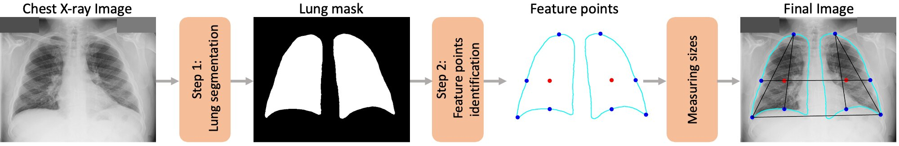
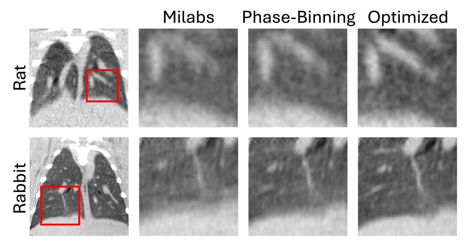
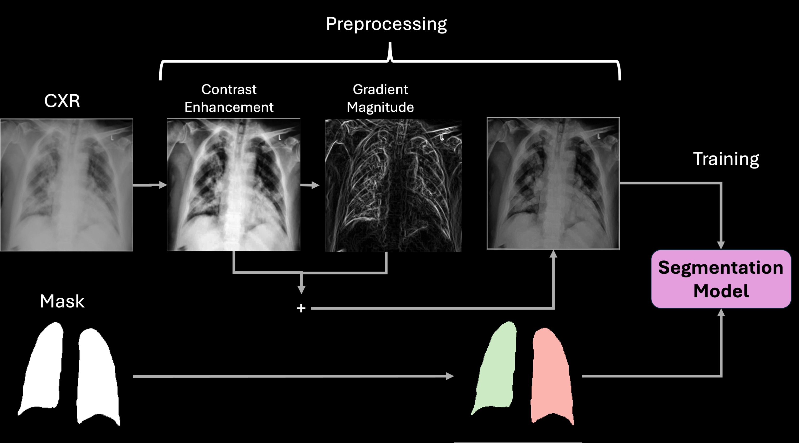
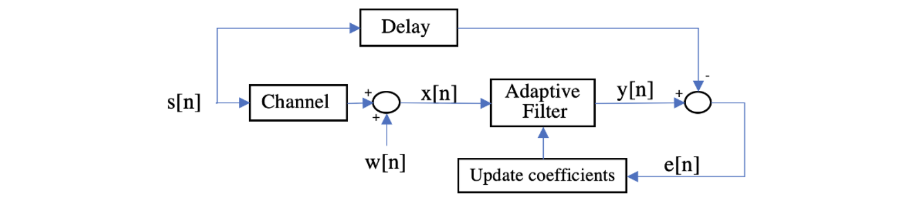
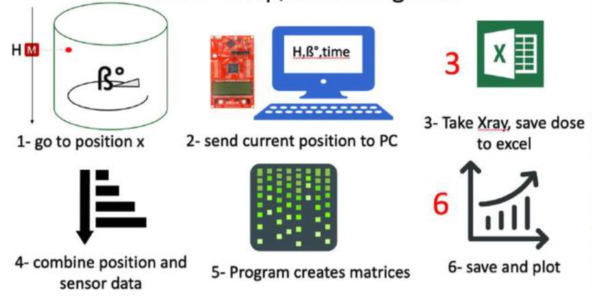

Projects
Medical Imaging, Computer Vision & Machine Learning
AI-driven automated lung sizing from chest radiographs
A deep learning and computer vision system for standardized lung
measurement from portable chest radiographs, achieving <2.5% error
(<7 mm) with robust inter- and intra-rater agreement compared to
expert radiologist review. Released as a PyPI package.
American Journal of Transplantation, 2025

Optimizing spatiotemporal resolution in dynamic imaging using phase binning-guided K-means clustering
A clustering-based approach to mitigate motion artifacts in cone-beam
micro-CT, enabling fast imaging with high spatiotemporal precision.
Medical Physics, 2025

Deep learning for chest radiograph analysis of primary graft dysfunction (PGD)
Segments left/right lungs with SOTA models, then uses representation
learning (CNN latent embeddings + PCA) to detect and quantify
infiltrates, improving standardized PGD grading and prognosis.

CT-Lung-Analysis: automated DICOM-to-lung-segmentation pipeline
An end-to-end Python tool that converts raw DICOM chest CT to NIfTI,
segments lungs without deep learning, and computes air-content maps
for rapid quantitative assessment (SimpleITK, nibabel).
code
Signal & Image Processing
Adaptive filters and equalizers for signal denoising and channel compensation
April 2022
Adaptive IIR notch filters (LMS) for sinusoidal noise suppression,
cascaded multi-interference rejection, and adaptive/blind equalizers
achieving full digital signal recovery.

FIR filter design and multichannel filter banks for audio and image processing
March 2022
FIR filter and multirate filter-bank implementation: low-pass filter
design, a 4-channel octave-band filter bank, and 2D image subband
decomposition with quantization analysis.
Embedded Systems & Hardware
X-ray radiation leakage scanner
June–September 2018
A system to scan X-ray tube radiation leakage using stepper motors,
sensors, an embedded controller, and a GUI application for R&D
testing of imaging devices.
Communication analyzer application
May–August 2018
An application that automatically identifies communication-channel
event sequences in NOMAD Pro2 handheld X-ray devices, analyzing and
sorting over 2 million data points for integration testing.
Embedded system for smart battery interface board test
August–September 2017
Functional-tester firmware to verify the Battery Interface Board used
on portable X-ray devices, exercising multiple communication protocols.
Class II dental imaging (X-ray) device life test
May–August 2017
PCB design (Altium) for a cycler board and data logger, with
microcontroller firmware for test-fixture control, SD-card data
logging, and LCD display.
